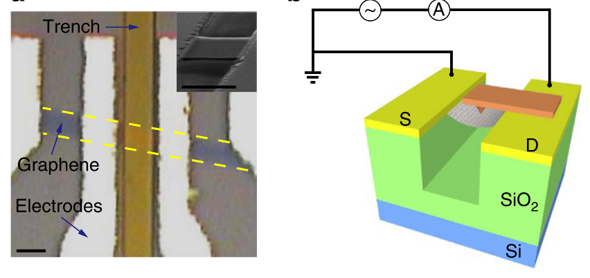
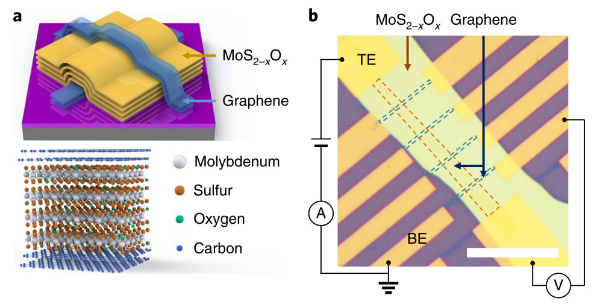

Nature Communications
The Positive Piezoconductive Effect in Graphene
A strain-engineered graphene transport study showing how mechanical deformation can tune electrical conduction in a two-dimensional crystal.
Read the paperElectrical Transport
My doctoral work at Nanjing University focused on electrical transport in graphene and van der Waals materials, especially how strain, interfaces, and device geometry can tune electronic behavior in atomically thin systems.

Featured Work

Nature Communications
A strain-engineered graphene transport study showing how mechanical deformation can tune electrical conduction in a two-dimensional crystal.
Read the paperFeatured Work

Nature Electronics
Layered-material memristive devices offer robust switching behavior, connecting van der Waals interfaces with nonvolatile electronic functionality.
Read the paperRelated Publications